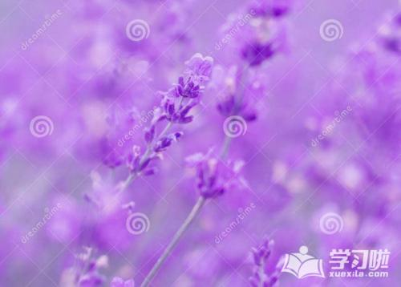

关于我
-

Y X
天行健，君子以自强不息；地势坤，君子以厚德载物。
我的相册


关注我 么么哒


你是什么人便会遇上什么人
有时就为了一句狠话，像心头一口毒钉，永远麻痺着亲密感情交流。恶言，真要慎出，平日多誠心爱语，乃最简易之佈施。
爱情没有永远，地老天荒也走不完
也许，爱情没有永远，地老天荒也走不完，生命终结的末端，苦短情长。站在岁月的边端，那些美丽的定格，心伤的绝恋，都被四季的掩埋，一去不返。徒剩下这荒芜的花好月圆，一路相随，流离天涯背负了谁的思念？
人生若只如初见
烟花不会让人懂得，它化作的尘埃是怎样的温暖，他宁肯留下一地冰冷的幻象，一地破碎。如果你哀伤，你可以为他悼念，却无法改变它的坚持。
绝色狂妃
浓云舒卷，编织出暮色苍茫。黄昏阳光透过纱窗，落了一地的锦瑟。华灯如菊花开遍空远的黄昏，蓦然间凭添了些许浪漫的斑斓缤纷。

浮生物语
有些话，永远讲不出口；有些泪，永远流不出来 你将我自死神手中抢回来，现在，由我将你的泪抢回来 我从来都不对你哭，从来都让你以为我很快乐，那是因为世上没有人比我更了解，你永不褪去的笑容，都是流不出来的眼泪 我不想让你难过，而已

采桑子
非关癖爱轻模样，冷处偏佳。别有根芽，不是人间富贵花。 谢娘别后谁能惜，飘泊天涯。寒月悲笳，万里西风瀚海沙。

目送
总会有那么一个人 在某个风景正好的季节来到你身边 并且懂得你全部的好

一禅小和尚
有时就为了一句狠话，像心头一口毒钉，永远麻痺着亲密感情交流。恶言，真要慎出，平日多誠心爱语，乃最简易之佈施。

光只开痴情花，岁月怎负无情人
一颗枝繁叶茂的大树总是引人注目的。那绿叶扶疏，暗香浮动的情致、是近或远，无论你远远地歇坐，还是去那里流连合影，这样的树可有清风自来，这样的树可为你遮风挡雨?

林清玄散文
我对自己说：”跨过去，春天不远了，我永远不要失去发芽的心情。"而我果然就不会被寒冬与剪枝击败。虽然有时静夜想想，也会黯然流下泪来，但那些泪水，在一个新的春天来临时，往往成为最好的肥料。